Повторный скан не должен быть лотереей
После каждого действия человек видит результат. Если повтор опасен, система объясняет последствия и даёт отменить последнее действие.

01 · Product UX · Клеверенс
Как превратить техническую операцию на терминале в управляемый сценарий — с понятным состоянием, безопасным завершением и единым центром исключений.
 Система должна объяснять: что произошло, что сохранено и что делать дальше.
Система должна объяснять: что произошло, что сохранено и что делать дальше.01 — Контекст
Кладовщик работает в шуме, спешке, перчатках и нестабильной сети. Если система не объясняет состояние, ошибка превращается в повторный скан, простой, расхождение в учёте или ручное вмешательство старшего смены.

02 — Доказательства
Публичных отзывов кладовщиков мало. Поэтому я разделил, что подтверждено документацией и повторяющимся поведением продукта, а что пока остаётся гипотезой для проверки на реальном складе.


03 — Решения
Я собрал проблемы в четыре истории. Каждая отвечает на один вопрос: что сейчас создаёт риск, какое правило нужно изменить и как понять, что человек снова может работать.
После каждого действия человек видит результат. Если повтор опасен, система объясняет последствия и даёт отменить последнее действие.

Единица измерения, упаковка и пересчёт находятся рядом с числом. Не нужно держать арифметику иерархии в голове.

Статус разделяет локальное сохранение, отправку на сервер и принятие в учётной системе — без ложного чувства финала.

Сообщение отвечает на четыре вопроса: что случилось, что сохранено, что сделать сейчас и когда нужна помощь.

04 — Система
Общие блоки удерживают единый смысл на терминале и в панели старшего смены: результат скана, модель количества, путь документа и подсказка при ошибке.

Добавлено, нужно решение, нет связи.
План, факт, остаток и единица рядом.
Сохранён, ждёт отправки, принят.
05 — Проверка
Я зафиксировал, что измерять в текущем процессе, как проверить понимание прототипа и какие сигналы смотреть перед запуском на одном складе.


Вывод для продукта